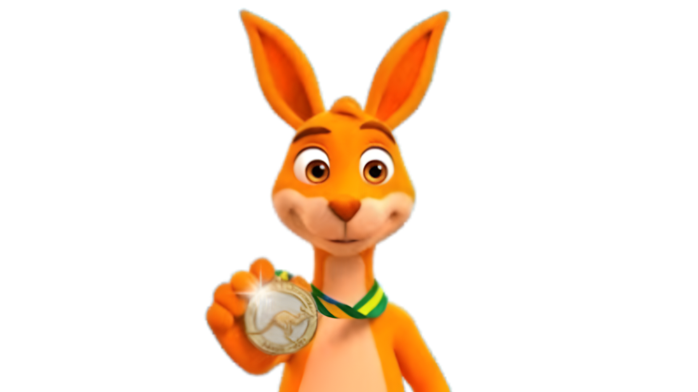

O que é
O Concurso Canguru é a maior competição internacional de Matemática do mundo, aberta a estudantes do 3º ano do Ensino Fundamental ao 3º ano do Ensino Médio.

Mais do que uma prova, é uma iniciativa global presente em mais de 100 países, que mostra que a matemática pode ser leve, criativa e inspiradora.